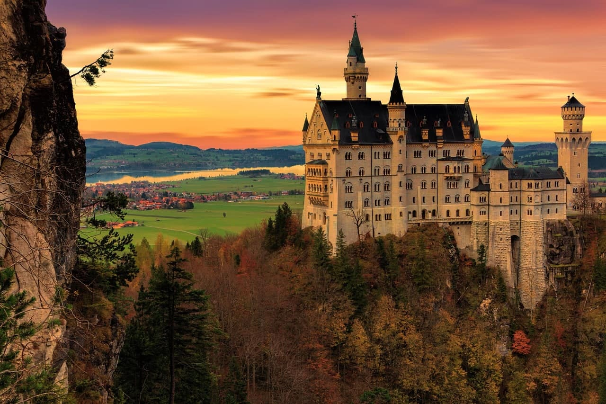
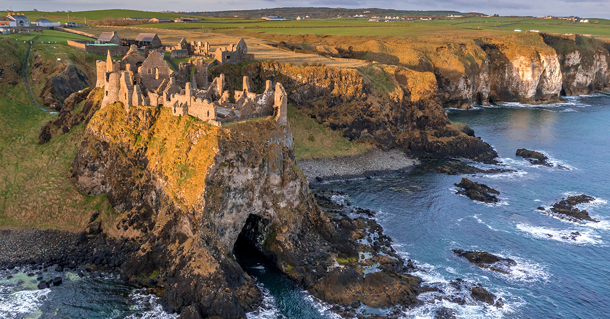
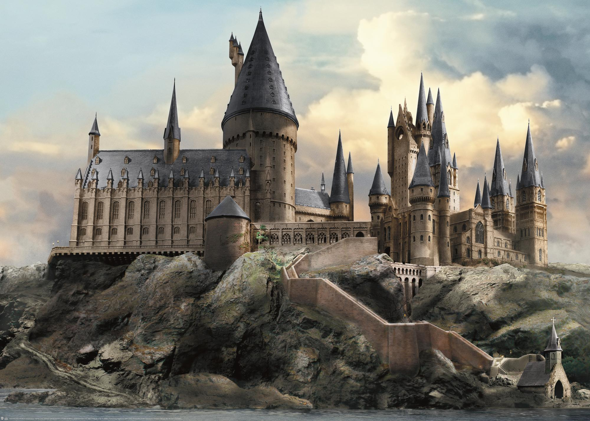

The Hogwarts University educational progrm can divide into 4 greater houses, our houses of knowledge. These houses are Gryffindor, Slytherin, Hufflepuff and Ravenclaw, each one are specialized into a specific faculty, as applied science, penal and legal science, etc.
Founded in the late tenth century by Godric Gryffindor, Salazar Slytherin, Rowena Ravenclaw, and Helga Hufflepuff, the institution originally served as a boarding school for young witches and wizards mastering foundational magic. As the wizarding world modernised and became increasingly intertwined with Muggle society, the founders' successors recognised that secondary magical education was no longer enough to prepare graduates for complex civic, scientific, and clinical professions.
Out of that necessity, Hogwarts University was established as the premier institution of higher learning for graduates of Hogwarts and wizarding schools worldwide. Retaining the castle's historic grounds and four-house structure, the university transformed the traditional houses into specialised academic faculties—Law and Public Justice (Gryffindor), Economics and Political Science (Slytherin), Medicine and Veterinary Sciences (Hufflepuff), and Engineering and Applied Sciences (Ravenclaw).
Today, Hogwarts University bridges ancient magical scholarship with rigorous modern university standards. Undergraduates and postgraduates move beyond basic spellwork into accredited degree programmes that combine Muggle scientific, legal, and economic frameworks with advanced magical theory. Guided by its original motto, Draco dormiens nunquam titillandus, the university stands as an international centre for research, professional training, and responsible leadership across both worlds.
Hogwarts has multiple locations and facilities around the world, mainly in the United Kingdom.


Our main campus is situated in the rugged countryside of Northumberland in northern England, near the Scottish border. Spanning roughly 1,200 acres, it is the largest and oldest campus, combining tenth-century stone quadrangles and cloisters with subterranean laboratories and modern lecture halls concealed beneath protective enchantments.
About the facilities, houses up to 6,500 undergraduates and postgraduates. Facilities include the Grand Convocation Hall, the Bodleian-Archival Restricted Library (housing over two million physical and enchanted volumes), the San Mungo Teaching Hospital, formal moot courtrooms, and full residential colleges for all four houses.
Finally in an academic focus, offers every degree programme across Gryffindor, Slytherin, Ravenclaw, and Hufflepuff, serving as the administrative and ceremonial heart of the university.
Other of our campus is in Scotland, nestled in the dramatic U-shaped valleys of Glencoe in the Scottish Highlands, accessible via the historic West Highland rail line and the Glenfinnan Viaduct. Covering 850 acres of mountainous terrain and lochside land, the campus is built for large-scale experimentation and isolated strategic summits away from Muggle urban centres.
Accommodates 2,200 students and visiting fellows. Its Grade-A facilities include high-output industrial alchemy and chemical engineering foundries, autonomous robotics testing grounds, high-security Gringotts economic modelling vaults, and diplomatic simulation chambers. ointly operated by Ravenclaw and Slytherin, specialising in postgraduate engineering, energy systems, macroeconomics, and international statecraft.
One of the locations is in Wales,Positioned along the windswept cliffs and golden beaches near Freshwater West in Pembrokeshire, West Wales. It's a compact 420-acre coastal reserve integrating stone cliffside observatories with tidal research docks and botanical greenhouses.
The capacity of the facilities supports 1,400 students. Equipped with marine veterinary sanctuaries, aquatic magical creature rehabilitation pools, coastal civil engineering wave tanks, and renewable tidal-magic laboratories. It academical focus run by Hufflepuff and Ravenclaw, focusing on veterinary medicine, ecological conservation, nutrition sciences, and civil/environmental engineering.
Finally, at late twenty century Hogwarts opened a new location in Yaracuy, Venezuela, tucked between the misty cloud forests of the Sierra de Aroa and the lush valley near Chivacoa and Sorte Mountain in Yaracuy, northwestern Venezuela—a region famed in local folklore for deep mystical traditions and extraordinary biodiversity.
Its size is around the 180 acres, it is Hogwarts University's newest and most intimate campus, designed with sustainable open-air pavilions, timber-and-stone cloisters, and protected tropical forest reserves. Built for a tight-knit cohort of 450 students, ensuring small seminar sizes and direct field access. Despite its smaller scale, its facilities are state-of-the-art: a Neotropical Wildlife & Magical Creature Veterinary Clinic, tropical medicine and herbal pharmacology labs, a regional Human Rights & Environmental Law Clinic, and bilingual broadcast studios.
Being the newest location, it only focus exclusively hosts Gryffindor and Hufflepuff. Hufflepuff leads programmes in Medicine, Veterinary Science, Physiotherapy, and Nutrition (leveraging Yaracuy's rich endemic flora and fauna), while Gryffindor oversees Law, Political Science, and Investigative Journalism, focusing on Latin American constitutional law, community advocacy, and environmental justice.
